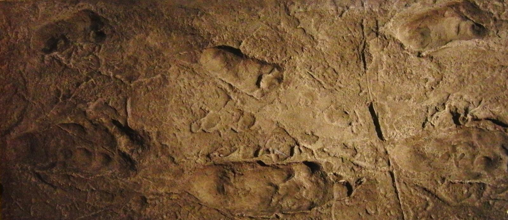
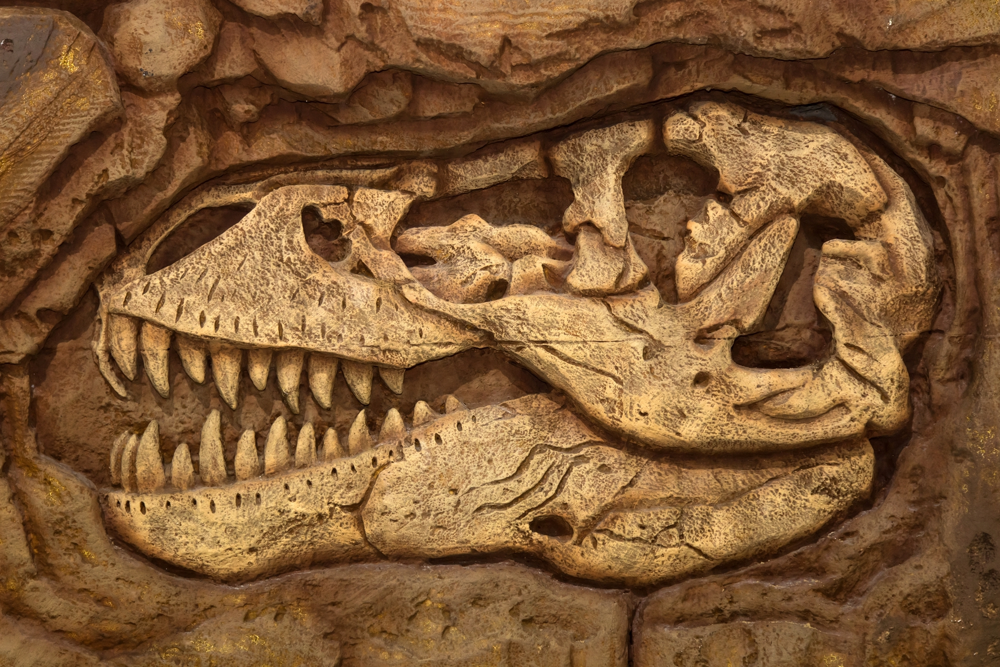

-

Fossilisation
The Quztacoatlus was initially discovered in 1971 by Douglas A. Lawson at the Big Bend National Park in Texas whilst conducting geological fieldwork for his masters thesis. What he found was a large hollow wing bone fragment that was later identified by Dr. Wann Langston Jr as part of a Pterosaurus wing, though massive in comparison to previous bone fragments discovered and could be more accurately compared to those of pigeons. This large bone once identified as a massive wing fragment was humanity's first introduction to a flying animal that was bigger than a car, and sent shock waves through the scientific world. Once it was realised the large pterosaur bone belonged to the species of something separate from the standard sized Pterosaur, Professor Langston dubbed the large bone fragment and new genus type as (TMM 41450-3) in 1975, otherwise known as the Quztacoatlus Northropi. ‘Quztacoatlus’(genus) as in the Aztec serpent god and ‘Jack Northropi’(species) after the American aircraft engineer for its large wingspan. Doug Lawson's discovery of the Quztacoatlus would gain massive recognition as a notable point in history and made the front page of New York Times as the ‘largest flying animal known to man’.